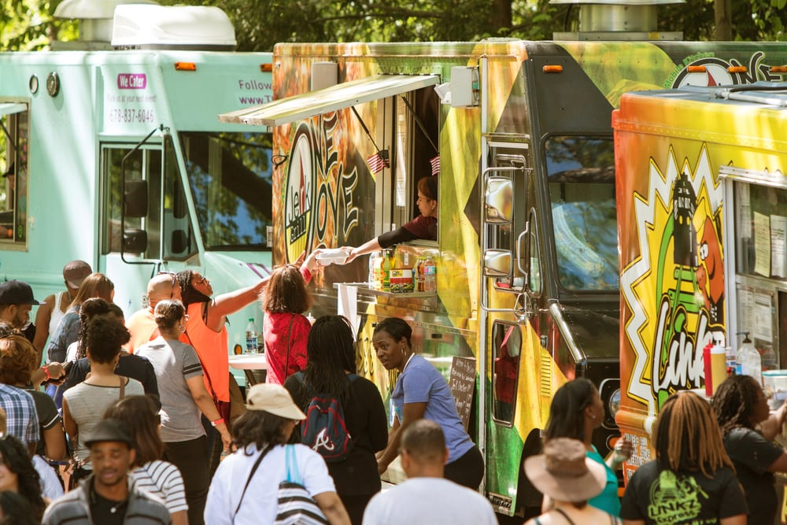
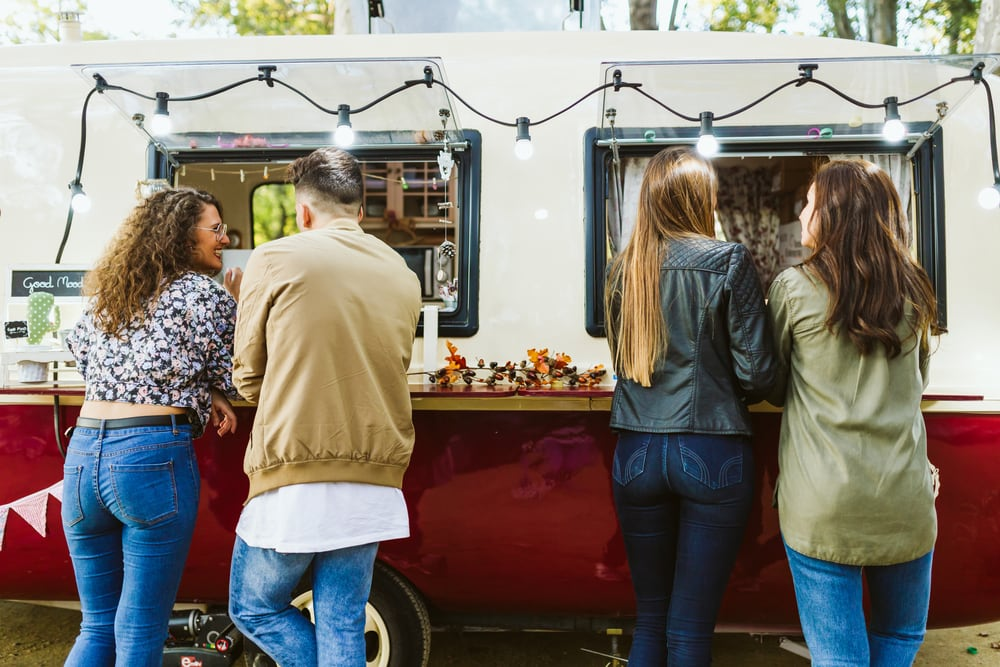

How to Start a Food Truck Business
In 2015, the U.S. food truck industry brought in $856.7 million. By 2020, that number is expected to flirt with $1 billion as food trucks increasingly open up shop all over the country—in places like Portland, Austin, Seattle, San Francisco, New York City, and everywhere in between.
Suffice it to say that now is a great time to start your own food truck business. And that’s precisely what people of all backgrounds are doing.
“I used to be a lawyer,” says Eric Silverstein, owner of The Peached Tortilla, an award-winning food-truck that started in Austin, Texas in 2010 and has since grown into a full-throttled brick-and-mortar restaurant and catering company. “I got into this industry mainly because I was just very interested in owning my own business and food was a passion more than anything. The nature of the food truck business was exciting to me. It was a low barrier to entry in terms of the starting capital I needed.”
Oh. There was one other thing, too.
“I didn’t particularly love my old career as a lawyer,” Silverstein adds with a laugh.
If you’re thinking about starting a food truck business, you’ve come to the right place. We’ve scoured the internet for the information you need and collected in one comprehensive guide. We’ve also interviewed successful entrepreneurs and food truck business experts, to bring their insights to you.
This guide will cover everything you need to know about running a food truck business, including:
- How to create a food truck business plan
- What challenges you can expect when you open your business
- How to finance a food truck business
- How to find food truck businesses for sale
- What food truck business equipment you need
- Tips on how to run a food truck business
- Tips on how to market a food truck business
- The best areas in the United States to launch a food truck business
How to create a food truck business plan
So you want to open a food truck business. That’s awesome.
But you need more than an idea.
“You want to make sure you have a solid business plan and a deep understanding of your local market and laws before you pursue funding for your truck,” says Amber van Moessner, senior director of communications for Upserve, makers of a modern restaurant management platform.
Here’s what your business plan should include:
- An executive summary that explains what you’re trying to accomplish
- A company description that includes what kind of food you’re going to sell, where you’re going to operate, what equipment you need, how many trucks you’ll have, and other similar items
- A market analysis that examines potential customers, competitors, and what you bring to the table that’s different
- A summary of management and ownership that explains who’s involved in the business and how your food truck operation is going to be run
- A marketing strategy that describes how you plan to promote your business (more on that later)
- A business operation plan that includes your hours of operation, the number of employees you’ll have and—if you’ve gotten that far—how much you’re going to charge
In addition to a business plan, you’ll also have to secure a food truck business license, a food handler’s permit, vehicle permits, health permits, fire safety inspection certifications, and other documentation.
This all might sound like a lot—and maybe it is. No one ever said starting a company was easy.
But if all goes according to plan, a lucrative dream job may be just around the corner.
A recent survey asked 300 full-time food truck owners how much income they generate annually. More than 85% of respondents said they bring in over $100,000 in gross income each year. More specifically, 34.08% earn between $100,000 and $149,999, 30.04% earn between $150,000 and $199,999, and 21.52% earn more than $200,000.
With the right plan in place and the determination to reach your goals, the sky’s the limit.

Understand the challenges of running a food truck business
Building a small business from the ground up is hard work—regardless of the industry. Like all small business owners, food truck owners have to worry about building a brand, selling high-quality products at good prices, finding good employees and keeping them happy, and making sure customers find the food truck in the first place—and enjoy their experiences every time.
Beyond those common business problems, food truck owners all experience a few other industry-specific issues when they’re just starting out, van Moessner says.
“The biggest challenges are balancing your new business and—hopefully—customer demand with marketing and social media and having the right amount of ingredients, supplies, and customers on a daily basis,” van Moessner explains. Technology, however, can make all of it a lot easier. “Using an inventory tool or POS system with data built in can help you predict what your staffing and supply needs will be.”
It can also be difficult to figure out how much inventory to have on hand at any time and where to store your food items and associated accouterments.
“Food and recipe costing can be really challenging—especially if you’re dealing with more limited food storage than a traditional brick-and-mortar restaurant,” van Moessner says.
There are also cash flow issues to consider, particularly since most food trucks are unable to take advantage of the economies of scale that some traditional restaurants enjoy.
“You might not be able to buy your supplies in bulk at lower prices,” she continues. “You also have to consider things like vehicle maintenance and fluctuating fuel costs, insurance, licenses, and permits.”
Permits and licenses don’t always come easy, either. For example, San Francisco food trucks need to complete at least 32 procedures to get proper permits. All told, each food truck needs 11 permits to operate legally in the city—at a cost of nearly $3,500.
Depending on where your food truck operates, you may have a different set of challenges.
According to a recent report, San Francisco food truck operators spend $28,642 to run their businesses each year while food truck operators in Portland spend $5,410 to do the same. Boston food truck operators have it the worst, paying nearly $38,000 each year to run their businesses.
Of course, competition can also be challenging. If there are an endless amount of food truck options in the vicinity, it may be hard to break through the market and end up profitable on the other side.
As any small business owner knows, challenges come with the territory. With a solid business plan in place and the right approach to these obstacles, you can build a highly successful food truck business.
How to finance a food truck business
You’re ready to face the challenges food truck operators face and you can’t wait to start serving customers. But you still need to turn your idea into reality—which means you’ll need capital.
Food trucks businesses may be cheaper to start than other businesses, but they still require a good amount of cash. A used food truck can cost as much as $40,000, while a brand-new one can cost up to $100,000, for example.
There are also many other kinds of costs to consider: vehicle repairs, a POS system, uniforms, supplies, gas, office supplies, a website, inventory, kitchenware, and more.
Some food truck entrepreneurs may have access to that much capital, but most don’t. If you find yourself in the same category as most other food truck owners, there are several financing options to consider.
Silverstein financed The Peached Tortilla by raising $40,000 from investors and funding the rest of the business out of his own pocket.
“The odds of me getting a substantial enough loan to run the business were not good—I had no track record,” Silverstein says. “Banks look at food trucks or restaurants like high-risk loans. I had trouble securing a loan for my restaurant—and that was after I’ve proven myself in the food truck. Why would anyone loan me money for my food truck?”
Other food truck entrepreneurs take different routes.
“Most food truck operators start with a mix of savings, crowdfunding, and microloans,” van Moesser explains. “For some lower-cost operations, getting started is as easy as taking out a low-interest rate business card.”
While it may be tempting to finance your food truck business out of your own pocket, that can create a whole other set of problems—even if you have the cash to spare.
“Self-financing has its pros and cons,” van Moesser continues. “You can start your business debt-free and right away when you are self-financed. But it’s easy to quickly run out of money without a backup plan on the long road to profitability.”
Crowdfunding is another financing option food truck business can consider.
“Crowdfunding is a great idea for food trucks because it also provides a crash course in marketing and a proof of concept before you set up shop,” van Moessner concludes. “If you can get a community excited and bought in on your food truck and products, they will likely support you by purchasing your food once you’re open and established. This also allows you to start your business with minimal debt.”
Still, even with financing in place, cash flow problems can always loom.
“I think what makes the food truck business challenging is the margin, the day-to-day hustle and grind, the amount of stress and energy you have to put in to be successful,” Silverstein says. “If your volume isn’t big enough, you can’t go with vendors that deliver, so then you end up having to go out to a commercial warehouse to buy your products.”
Despite these obstacles, with a solid business plan, financing on hand, and a contingency plan in place if you need more funding, you can grow your food truck business into something much more—as Silverstein’s story demonstrates.
How to find food truck businesses for sale
If you dream of running a popular food truck, you don’t have to start your food truck business from scratch. You could always opt to buy one outright, assuming you can find a seller with an existing business you like.
A quick Google search reveals several sites dedicated to selling food trucks to entrepreneurs such as yourself. But buyer beware: When you take over the business, you inherit everything that comes with it—including the truck.
“There are very few food trucks in the United States that are running out of a vehicle that was built as a food truck,” Silverstein says. “Usually, there’s a truck base or a truck shell that was an old UPS truck or an old FedEx truck and they’ve been retrofitted. The problem with that is that they’re old vehicles, they have a lot of miles on them, and they’re not meant to support the amount and weight of equipment that is on the vehicle itself. You end up having a lot of problems—transmission problems, chassis problems, tire problems, you name it.”
This isn’t to say that old trucks won’t work. Silverstein actually built his own business on the backs of two retrofitted trucks. It can work, and it does work for many successful food truck entrepreneurs. You just need to be careful.
“It’s a huge gamble because you know you’re going to have a lot of problems,” he explains. “You really don’t know how this truck was treated. It’s got a lot of miles, so you know there’s going to be a lot of repairs. It’s just the nature of the business.”
Food truck business equipment and expenses
As you consider starting your own food truck business, you need to get a good idea of how much it might cost to run or consider a truck loan.
Luckily for us, the folks over at Food Truck Empire put together a handy list of food truck startup costs:
- The food truck itself—fitted with equipment and branding—can cost anywhere between $25,000 and $100,000
- Initial inventory costs between $1,000 and $2,000
- A point-of-sale system can cost another $1,000
- Kitchenware (e.g., pots and pans) can cost up to $2,000
- A website can set you back another $5,000 (but you can also build something respectable for less than that)
- A fire extinguisher is anywhere between $100 and $300
These are far from the only expenses to consider. Permitting and licensing fees (and taxes) all vary on a state-by-state and city-by-city basis—so set up shop accordingly.
You’ll also need a uniform of sorts—some T-shirts and hats might do the trick. And there are office supplies, marketing expenses, fuel costs, insurance, payroll taxes, and other miscellaneous fees to keep in mind as well.
Step by step: How to run a food truck business
By now, you know what’s involved with starting a food truck business, how much it might cost to get up and running, and the challenges that food truck operators experience.
You’re still stoked on the idea—awesome!
Here are five things to keep in mind as you get ready to serve your first delicious meal.
1. Choose the right menu and set the right prices.
If there are 20 food trucks in your city and they’re all serving tacos and burritos, you may want to think twice about opening up yet another truck that sells Mexican food.
Do a bit of research and see what kind of food truck businesses are in your neck of the woods. The more you know about your local market and competition, the better chance you’ll have of standing out. One way to stand out is to come up with a menu that’s unique—something that your city’s missing.
Once you’re happy with your menu, it’s time to set prices. You don’t want to charge too much, because you’ll scare customers away. And you don’t want to charge too little, either, because you won’t make any money.
Best practices suggest targeting food-cost percentages between 20–40%. By this logic, if it costs you $3 to make an item, you would consider charging between $8 and $15.
2. Come up with a catchy name.
Like any restaurant or dining establishment, the name you give your food truck business can have a tremendous impact on your company’s success.
Spend a lot of time brainstorming potential names. Consider the theme of your menu and the vibe you’re trying to convey. You want customers to be able to tell what kind of food you’re selling with a quick glance. That said, you don’t want to be too restrictive; you never know when you might want to expand your menu in the future, and you don’t want to confine yourself in a corner.
Your food truck’s name should also memorable and easy to pronounce—yet different enough to stand apart from other businesses. If the name is incredibly long, no one will remember it.
Not super confident in your idea? Don’t be afraid to bounce names off of trusted people in your circle for feedback. Your food truck’s name is very important, so you should gather as much data as you can before you make a final decision.
3. Hire the right people.
You might create the best business plan in the world and have an even better menu to back it all up. But at the end of the day, there’s only one of you. Unless you’re planning on doing everything on your own, you’ll need a team of dedicated workers to help your business get to the next level.
Choosing who to hire is another incredibly important decision you’ll have to make. While the right employees will help delight your customers, toxic ones will scare them away.
Look for employees who are reliable and friendly. It doesn’t hurt if they are well-connected to the community either, because you can probably bank on some of their friends supporting your business. Great food truck employees will also have a working knowledge of the kitchen and will be able to talk in detail about the meals you serve—what’s in them, whether gluten-free options are available, where the food comes from, whether it’s possible to customize the order, that sort of thing.
Because this decision is so important, you should choose your employees very carefully. It’s probably worth working really hard for a few more weeks if it means the difference behind hiring someone you can’t count on and hiring a rock star.
4. Get your legal affairs in order.
The geographic area you choose to operate your food truck business out of will determine what you need to do to ensure you’re complying with local laws and regulations. No matter where you wind up, you will have to obtain a food service permit that will need to be renewed on a regular basis (e.g., once a year).
While each jurisdiction’s specific requirements will vary, you’ll generally need to register with the health department to make sure your vehicle is up to code and that your food is stored properly. You’ll also need to make sure that your water supplies are free from contaminants. If you use a commercial kitchen for food prep, inspectors will want to check that out, too.
The health department may also want to see your team in action. To this end, there’s a chance they’ll stop by your food truck unannounced to see whether your staff is wearing gloves and that foods are stored at proper temperatures, among other things.
In addition to passing health inspections, you’ll also need to secure business licenses, obtain an Employer Identification Number for tax purposes, keep your vehicle registered and insured, and pass a fire safety inspection.
Finally, you’ll have to familiarize yourself with local ordinances and zoning policies. What hours can you sell food during? Where can you park (in San Francisco, food trucks can’t be within 75 feet of a restaurant)? Are there any limitations on how long you can stay in one location? These are the kinds of questions you’ll have to find answers to.
5. Embrace your inner entrepreneur.
Running any kind of business is hard work. Many people underestimate how much is involved in starting any business.
Even if you only serve meals during the lunch window, there are all sorts of other tasks you’ll need to tend to—like processing payroll, ordering supplies, managing your finances, meeting with your team, networking with other businesses in the community, reaching out to media outlets for coverage, and more.
Get ready to work like a machine. If all goes according to plan, you’ll be able to hire more employees and delegate some of these tasks. Investing in modern technology can also help streamline a lot of business-related responsibilities—like managing HR, processing payroll, keeping track of inventory, and even solving cash flow issues.
Now that you have a good idea of what you need to do to run your business, let’s take a look at some ideas on how you can effectively market your business to attract more customers and grow your bottom line.

How to market a food truck business
You might be thinking: If you park it, they will come.
Unfortunately, it’s probably not going to be that easy. Sure, you might open up shop and get passersby to give you a whirl. But if you really want to grow your food truck into a successful business, you’ll need to spend some time and money marketing your operation.
Here are six easy ways to do that.
1. Pay attention to your truck’s design.
Wherever your truck goes, the eyeballs will follow. Pay close attention to the way you ultimately decide to design your truck and brand it with your logo.
Your food truck itself serves as a mobile advertisement for your business, so you want to make sure it commands attention and is pleasing to the eye. Since your truck is the first thing people will see when they encounter your business, it’s worth going the extra mile to make sure your design is engaging and appealing.
2. Get more trucks.
You’ve got awesome branding on your truck. But there’s a problem: Like you, your truck can’t be in two places at once. If business is going well and the market wants more of what you’re selling, you can buy a new truck, give it the same branding, and double your exposure.
If you don’t have enough liquid cash to buy a new truck, don’t sweat it. You can apply for an equipment loan to get the money you need to expand your reach with a new truck—or even a few of them.
3. Post on social networks.
Everyone is on social media and everyone likes looking at pictures of delicious food (except when we’re hungry!), so setting up a presence on Instagram is a no-brainer. You probably want to be on Facebook, too, because that’s where all of your customers are. Twitter is another platform to consider. And unless you’re building a food truck empire, you probably don’t need to be on LinkedIn.
Grow your social network by offering unique deals and discounts to fans and subscribers who promote your business. What’s more, if your food truck is mobile and not in the same spot every day, your social media fans will be able to easily find out where you are by following your status updates.
4. Use email marketing to grow your fanbase.
As you grow your social networks and build up an email list, use email marketing to reach out to your customers every now and again, letting them know about new offerings, special deals, and any events coming up that your food truck is participating in (e.g., a music festival).
Tools like Mailchimp can automate many of these tasks, so you won’t have to worry about staring at a computer all day and can instead focus on what you do best: serving your customers.
5. Cater private parties and community and business events.
People are increasingly hiring food trucks to cater all kinds of events: corporate outings, weddings, birthday parties, baby showers, graduation parties, and more.
Not only do these types of opportunities give you a chance to generate more revenue, they also present great marketing opportunities. Stack a pile of buy-one-get-one-half-off coupons on your counter and let guests that are interested grab one at their leisure.
6. Encourage word-of-mouth advertising.
More than 80% of customers seek recommendations before making buying decisions. This is why word-of-mouth advertising is incredibly effective.
You can’t force customers to advertise on your behalf. But you can take proactive steps to ensure they have great experiences—increasing the chances they do.
Be friendly, be prompt, and be courteous. Serve up great experiences to your customers on a regular basis, couple that with great food, and it’s only a matter of time before patrons recommend your food truck to their friends and colleagues.
You’ve built a great food truck business and—thanks to your marketing efforts—you’ve grown your revenue considerably. Now it’s time to expand your food truck business to get to the next level.
Next, we’ll explore exactly how you can do that.
How to expand your food truck business
Some entrepreneurs might be content having a single successful food truck.
Others have bigger ambitions.
Case in point? Akash Kapoor grew his Curry Up Now food truck business into an empire that now includes four food trucks, six restaurants, and two cocktail bars. Franchising is also in the works, Kapoor says.
As Curry Up Now demonstrates, it’s definitely possible to grow your food truck business into something much larger. It just might not be smooth sailing the entire time.
After Silverstein launched The Peached Tortilla, he truly understood how difficult the food truck business actually was. Eventually, he realized that—instead of driving around from spot to spot or parking in one location—a different path forward made more sense.
“We ended up turning to private events and kind of became this very food-truck-based catering company initially,” Silverstein continues.
That decision opened the door for more opportunities. After Silverstein proved his Peached Tortilla concept successful, he targeted expansion.
“The margins became a lot better. We became profitable and we were able to reinvest those profits back into the business.”
Instead of adding more food trucks to the fleet, Silverstein opted to follow the same route as Kapoor, opening a bona fide restaurant.
Thanks to the success of his food truck, Silverstein had access to the cash he needed to open a brick-and-mortar location.
“Raising money wasn’t too challenging,” Silverstein continues. “I got a line of credit. I put my own money back into the business. I asked my investors to re-up and add more money to the pool and reinvest which they all did.”
It’s unlikely every business owner will have as easy a time securing the capital needed to expand.
If you’re eying the next step in the evolution of your food truck business and need financing, a flexible line of credit is a good option.
The top 10 areas to run a food truck business
We all need to eat. That being the case, a food truck located anywhere lots of people are that serves good food at reasonable prices and has a friendly staff has a good chance at doing well.
Some locations, however, have proven to be more lucrative—or at least less of a hassle—than others for food truck entrepreneurs.
According to the experts at Food Truck Nation in collaboration with the U.S. Chamber of Commerce Foundation, here are the 10 best cities to run a food truck:
- Portland
- Denver
- Orlando
- Philadelphia
- Indianapolis
- Houston
- Austin
- Los Angeles
- New York City
- Nashville
Additional resources
Still hungry for more information about starting, financing, and operating a food truck business?
Here are some more resources you should check out in your research.
- Guide to Small Business Funding — This is the best place to start if you’re thinking about financing your food truck business. In this guide, learn about how business financing works, what types of financing options you should consider, how to apply for funding, and how to get approved.
- Food Truck Operator
- National Food Truck Association
- Food Truck Empire
- FoodTruckr
- Mobile Cuisine
Ready for more?
Apply for funding and find out if you qualify today